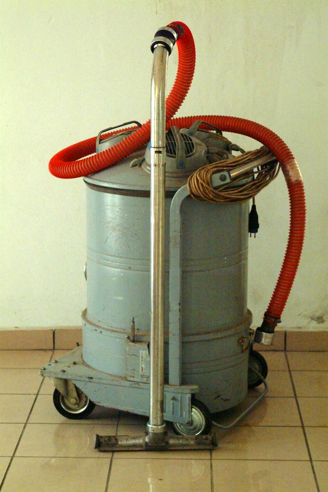

Produtos
Vacum Interprise RX14

Conheça a revolução para seu lar. A Vacum Interprise RX14 é um
aspirador que aspira e toca músicas. Coloque um CD ou Pen drive
e escute suas músicas prediletas enquanto faz aquela faxina em
sua casa.
Só com com ele poderá dançar zumba aspirando seu carpete. E não
perca a mais nova promoção. Na compra do revolucionário Vacum
Interprise RX14 você ganha outro inteiramente grátis. Vai
desperdiçar esta oportunidade?
Polystation Max Aspiration Pocket
Você já deparou em situações em que não tinha por perto um
aspirador de pó?
Quando você derrubou farelo de pão no sofá de sua sogra e não
tinha um aspirador por perto deve ter sido um situação bem
complicada. Deve ter por causa disso que sua sogra não gosta de
você.
Fique calmo e compre hoje mesmo o Polystation Max Aspiration
Pocket, o seu aspirador de pó de bolso. Você nunca mais ficará
desamparado de um aspirador de pó.
Poderá levar para todos os lugares em que for: na escola, na
igreja, no restaurante e principalmente na casa da sogra.
Na compra deste revolucionário produto você ganhará um voucher
para ganhar o livro best seller “Como enlouquecer seu chefe”.
Vitation Aspirex 2000

Tudo de mais tecnológico você encontra neste incrível produto.
Projetado com um design arrojado e sofisticado, sem abrir mão
do alto desempenho.
Você pode aspirar água, pó, óleo de cozinha, óleo velho de motor
de carro, lixo, cocô do cachorro, você pode aspirar tudo! Sujou,
limpou!
Ele vem como motor 1.8 de 120 cavalos, ainda pode dispensar o
uso de tomadas se abastecer o tanque com diesel.
Não existe produto igual no mercado. Só a Vitorlux oferece
garantia total por 30 anos.
Vitation Aspirex é oferta exclusiva Vitorlux!